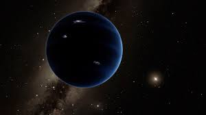

Minu tudengikood on 193806
Minevikus oleks siin tabelis olnud ka Pluuto, millel on 5 kuud.
| Nimi | Kuude arv |
|---|---|
| Merkuur | 0 |
| Veenus | 0 |
| Maa | 1 |
| Marss | 2 |
| Jupiter | 79 |
| Saturn | 82 |
| Uraan | 27 |
| Neptuun | 14 |
Nendele planeetidele lisandub veel tulevikus võibolla hüpoteetiline "Planeet X", mis võib, aga ei pruugi eksisteerida.
